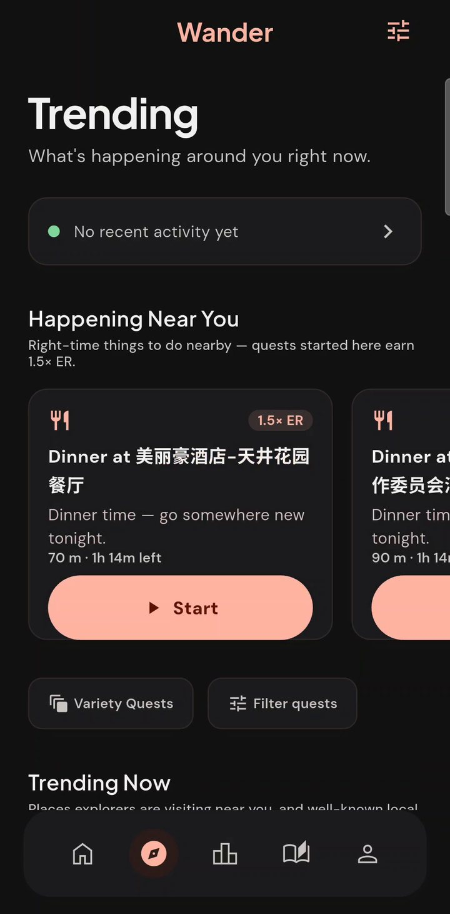
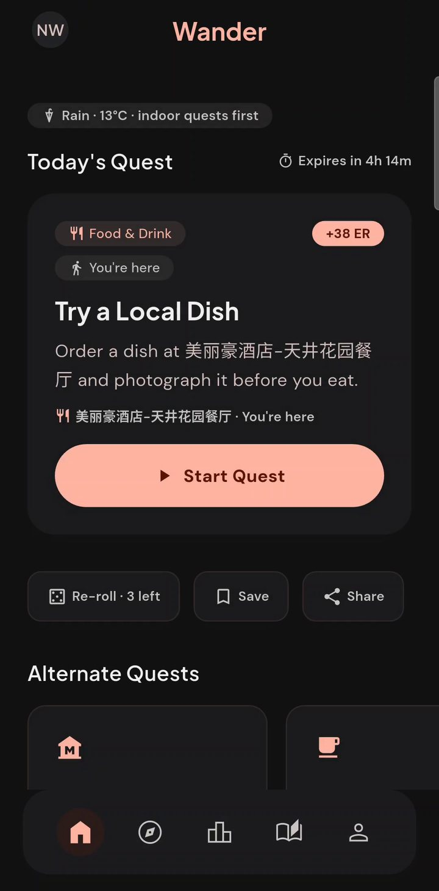
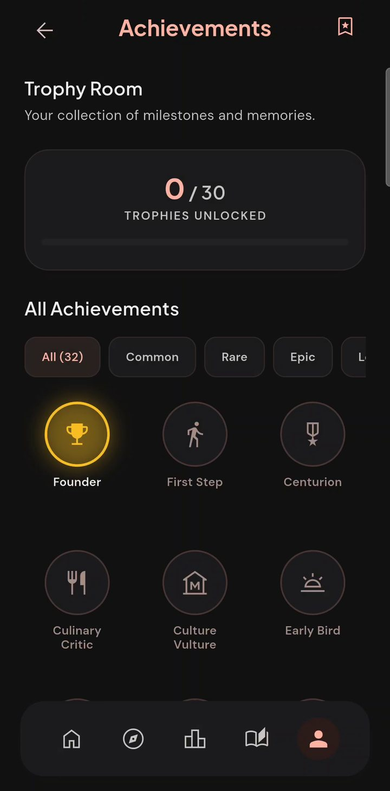

Real-world quests, wherever you are
Go somewhere new.
Today.
Wanderer looks at where you're standing and gives you one real thing to go and do. A dish to try, a landmark to find, a view to catch. Go there, prove it, and watch your map of the world fill in.



How it works
Open. Go. Prove it.
No feeds to scroll and no lists to plan from. Just the next good thing within walking distance.
Get today's quest
Built from real places around your exact position, tuned to the time of day and the weather outside.
Go there
Walking time and the route are one tap away. Not feeling it? Re-roll for something else nearby.
Prove you made it
Snap a photo on the spot. Your live GPS confirms you were there, and you earn Explorer Rating.
Today's Quest
One quest.
Picked for right here.
Every day Wanderer chooses a quest from the cafés, parks, museums and landmarks closest to you, then offers a few alternates if you'd rather go somewhere else.
- Real places near you, in any city in the world
- Indoor picks when it rains, sunset spots at golden hour
- Three free re-rolls a day
Happening Near You
The right place,
at the right time.
Dinner spots in the evening, viewpoints before sunset, markets on the weekend. Start one while it's live and earn 1.5× Explorer Rating.
- Changes with the clock and the weather
- A countdown shows how long each one lasts
- Trending places near you, with real categories
Trophy Room
Every place
leaves a mark.
Thirty core trophies across food, culture, nature and more, plus streak milestones and rank tiers. Your journal keeps every photo and place you've earned.
- Explorer Rating with tiers to climb
- Daily streaks with freezes for busy days
- A journal of every quest you finish
And everything around it
Small things that make it yours.
Rankings near you
City and country boards follow where you are right now. Land in a new city and you're on its board.
Challenge a friend
Send a challenge and race to finish a quest within 48 hours. Or invite someone new with one tap.
Share cards
Your verified photo becomes a card with the place, your rating and your streak, ready for Instagram, WhatsApp or WeChat.
Show to a local
Can't pronounce the place? Show its name full screen in the local script to a driver or a passer-by.
Home-screen widget
Today's quest and your streak, one glance from your home screen.
Works on a bad connection
The app keeps what you last saw, so it opens fast and carries on when the signal drops.
Made for travellers
From Lagos to Paris to Xi’an, quests come from real places around you, with maps that work in mainland China too.
Weather-aware
Rain moves you indoors. Clear evenings point you to the sunset.
Fair play
Every completion is real.
Photos are taken in the app, at the place, and checked against your live GPS. Anything unclear goes to a human reviewer, not straight onto the leaderboard. Your exact location is never shown on public boards, and your photos are never used to train a public model.
Wanderer Pro
Free to explore.
Pro to go further.
Everything that earns rank is free. Pro adds room to roam, and never buys you rating.
Free
Forever
- A daily quest and alternates
- Happenings, trending and rankings
- 3 re-rolls a day
- Save 3 quests for 7 days
- All trophies and streaks
Pro
or $29.99 / year: save 50%. 7 days free to start.
- Unlimited re-rolls
- A streak freeze back every month
- Save 12 quests for 14 days
- Forest and Dusk profile accents
- Send challenges to other explorers
Prices in US dollars before tax; the store shows your local price. Billed by Google Play. Cancel anytime in the store.
Questions
Good to know.
Where does Wanderer work?
Anywhere you can get a GPS fix. Quests are built from real places around you, so a big city gives you more to choose from, but there's always something nearby, even if it's a walk around the block.
Do I need to share my location all the time?
No. Wanderer uses your location while you're finding or verifying a quest, and during a walk quest you start yourself. It isn't tracked in the background otherwise.
Who can see my photos?
You. If a completion needs review, a moderator sees that one photo. Photos aren't posted publicly unless you share your card yourself.
Does it work in mainland China?
Yes. Wanderer uses maps and place data that work there and doesn't depend on Google location services.
How do I delete my account?
In the app: Profile → Delete account. Or follow the steps on this page.
Your next place is close.
Wanderer is in testing now and coming to Google Play soon. Want early access? Email us and we'll add you to the beta.